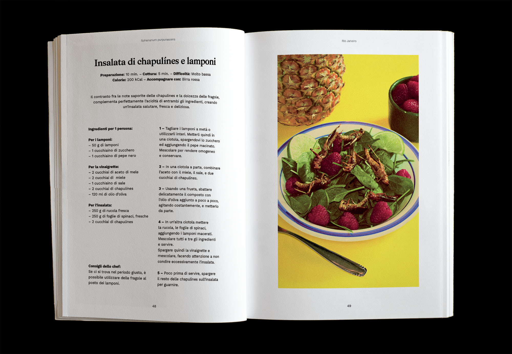
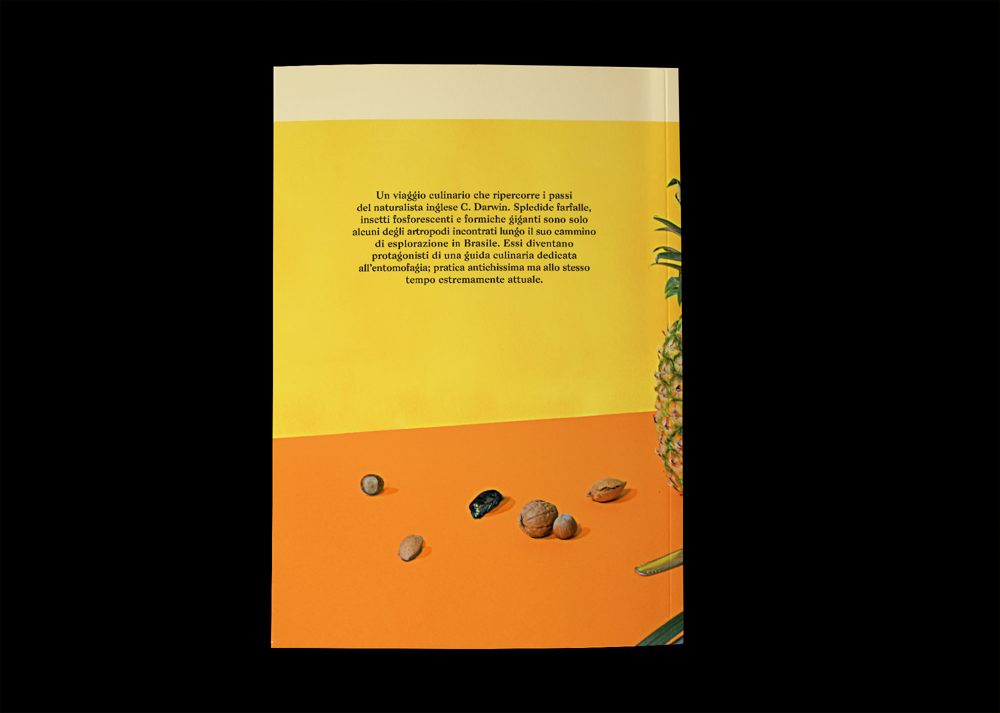
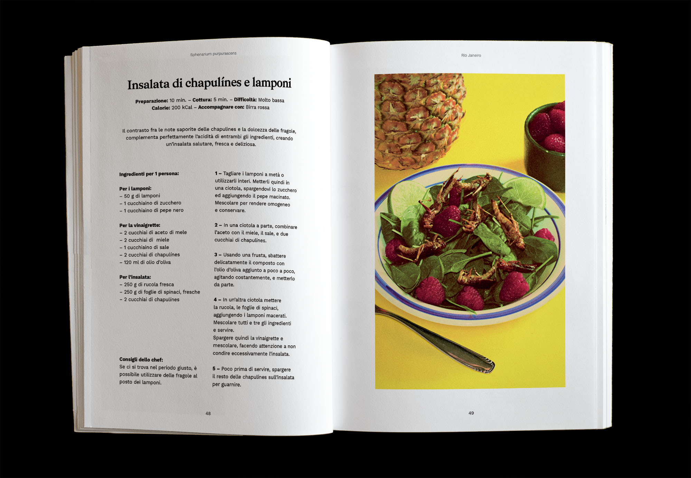
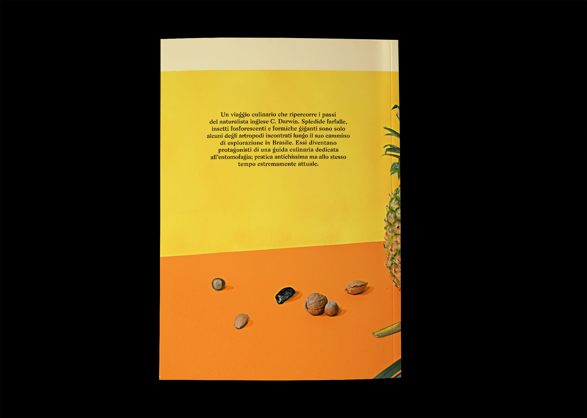
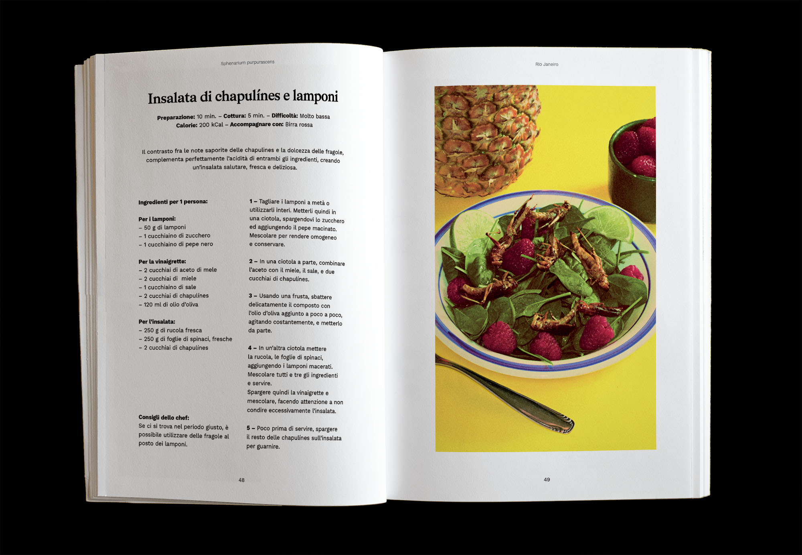
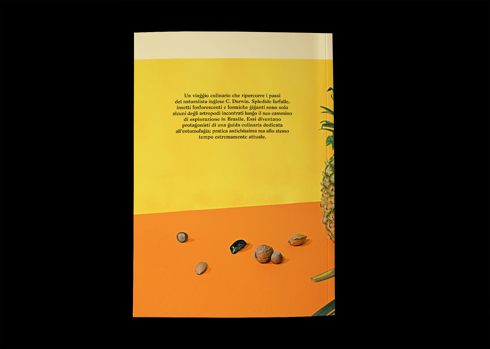

Inspired by a chapter from Charles Darwin's "The Voyage of the Beagle", this cookbook contains five recipes with a special ingredient: insects. Based on the recent UE law about the legalization of insects for human consumption, this book provides five recipes taken from all over the world, dealing with insects' flavours in different ways.
My project team was Elena Filippi, Sara Lavazza, Matteo Maggi, Pasquale Morelli, Francesco Scagliarini and Edoardo Guido.
Designed in 2017.
☟

